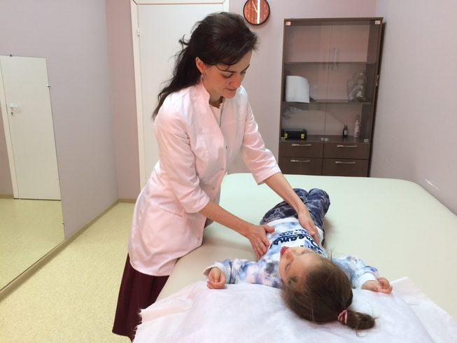

Чудеса там, где в них верят!

Дорогие друзья,
С 2014 года я практикую исцеление по методу тета-хилинг, а с 2016 года занимаюсь микрокинезотерапией.
Это все принесло мне бесценные знания и опыт, а многим моим пациентам – желанные результаты. На моей памяти множество примеров чудесных перемен к лучшему. Я доверяю этим методам и с благодарностью вспоминаю мастера Тета-Хилинг Людмилу Зверкову и врача- микрокинезиотерапевта Дмитрия Морозова, обучивших меня.
Каждый из случаев – простой ли он был, сложный ли – был показателен, поучителен, важен своей глубиной, своим посланием, и, конечно, результатом. Все вместе они по капле изменили меня и моё понимание этого мира, Я очень люблю то, что делаю, люблю сессии Тета-хилинг (они называются «раскопки») и то, как оживает человек после них, как его Душа начинает светиться и он ХОЧЕТ- жить, творить, делать, наполняться, нести в мир добро, проходить свои уроки через принятие и желание ПРОЖИТЬ то, что пришло, прожить наилучшим и гармоничным образом.
Удивительными историями, которым я стала свидетелем и которые произошли с моим участием, я хочу поделиться с вами. В каждой из них - Чудо, которое и вы можете сотворить для себя и близких вам людей, стоит только начать.